מאמרים
מאמרים מקצועיים על שיקום, כאב והפרעות שינה עם טיפים, מחקרים והסברים מהצוות המומחה של סופיה מדיקל, יחד עם ידע עדכני ומעמיק.
-
רפואה שיקומית

היתרונות של השיקום האמבולטורי במרכז סופיה מדיקל
המאמר מציג את היתרונות של שיקום אמבולטורי במרכז סופיה מדיקל, המבוסס על תוכנית שיקום רפואית כוללת ולא רק על פיזיותרפיה. התהליך כולל אבחון רפואי, הערכה תפקודית ומעקב מתמשך, תוך תיאום בין רופאי שיקום, פיזיותרפיסטים, מרפאים בעיסוק, פסיכולוגים וקלינאי תקשורת. מודגש שימוש בטכנולוגיות מדידה ושיקום מתקדמות, במטרה לקדם שיקום פיזי, קוגניטיבי, תקשורתי ונפשי, להפחית כאב ולשפר חזרה לתפקוד יומיומי עצמאי.
-
הפרעות שינה

הפרעות שינה: השפעתן על תפקוד, נהיגה וזכויות רפואיות
אבחון הפרעות שינה ובדיקות שינה בבית או במעבדה, כולל דוח למרב״ד וביטוח לאומי.
-
רפואה שיקומית

סופיה מדיקל: שיקום, טיפול בכאב והפרעות שינה
סופיה מדיקל הוא מרכז לרפואה מתקדמת המתמקד בשיקום רפואי מותאם אישית, במטרה לשפר תפקוד גופני, קוגניטיבי, תקשורתי ונפשי. התהליך מלווה על ידי צוות רב תחומי, תוך הפחתת כאב, שיפור יציבה וניידות והחזרת המטופל לחיים פעילים ועצמאיים. במרכז משולבים ידע קליני, תיאום צוותי ובקרה טיפולית להבטחת טיפול מדויק ובטוח.
-
רפואה שיקומית
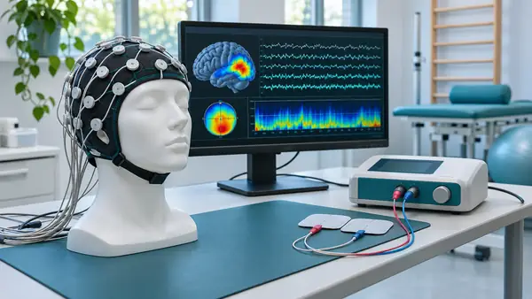
שיקום לאחר אירוע מוחי עם RecoveriX: טכנולוגיה מתקדמת לשיקום נוירולוגי
הכירו את RecoveriX, טכנולוגיה מתקדמת לשיקום נוירולוגי המשלבת ממשק מוח מחשב (BCI), EEG, דמיון מוטורי וגירוי חשמלי תפקודי (FES). במאמר תגלו כיצד הטיפול פועל, למי הוא עשוי להתאים וכיצד ניתן לשלבו בתהליך השיקום לאחר אירוע מוחי ובמצבים נוירולוגיים נוספים.
-
מרפאת כאב

כאב גב תחתון: 7 טעויות יומיומיות שמחמירות את הכאב בלי שנרגיש
כאב גב תחתון מושפע מהרגלים יומיומיים. גלו 7 טעויות שמחמירות את הכאב, מה לשנות בבית, ומתי חשוב לפנות לבדיקה מקצועית, עם טיפים פשוטים לשגרה בטוחה. כבר היום.
-
מרפאת כאב
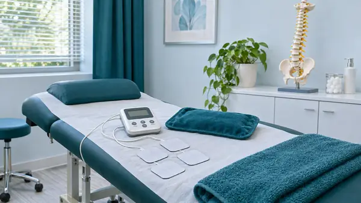
כאב כרוני: למה הוא נמשך וכיצד הוא משפיע על הגוף ועל איכות החיים?
כאב כרוני יכול להשפיע על שינה, מצב רוח ותנועה. קבלו הסבר ברור למה הוא נמשך, איך מאבחנים נכון, ואילו טיפולים משולבים עשויים להקל לאורך זמן. וגם בבית.
-
הפרעות שינה
עייפות כרונית: 7 סיבות נפוצות, ואיך לזהות בעיית שינה?
עייפות כרונית לא תמיד נובעת מעומס. למדו 7 סיבות נפוצות, איך לזהות בעיית שינה, אילו בדיקות לשקול, ומתי לפנות לרופא, עם צעדים ראשונים לשיפור. בצורה בטוחה.
-
הפרעות שינה
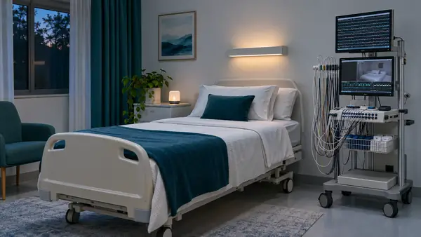
מה בודקים במעבדת שינה? מדריך קצר לפני בדיקה
מתלבטים לגבי מעבדת שינה? מדריך קצר למה בודקים, איך מתכוננים, מה קורה אחרי הבדיקה, ואילו שאלות כדאי לשאול כדי להבין את התוצאות ולטפל נכון. בלי אי ודאות.
-
מרפאת כאב

כאב ראש אחורי: 5 גורמים נפוצים, ומתי זה קשור לבעיה בשדרה הצווארית?
סובלים מכאב ראש אחורי? הכירו 5 גורמים נפוצים, סימני אזהרה שמחייבים בדיקה, ומה לעשות כשהכאב קשור לצוואר או לעצב, כולל טיפים להקלה בבית. ומתי לפנות לרופא.
-
מרפאת כאב
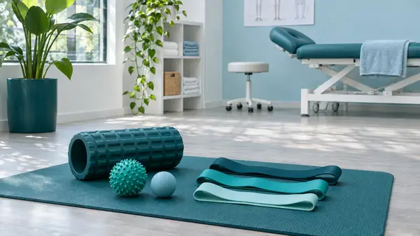
כאבי שרירים שלא עוברים: 7 סיבות מפתיעות, ומתי צריך שיקום ולא רק מנוחה?
כאבי שרירים שלא עוברים יכולים לנבוע מעומס, סטרס או בעיה רפואית. גלו 7 גורמים מפתיעים, איך מאבחנים, ומתי שיקום עדיף על מנוחה, עם טיפים להקלה בטוחה.
-
מרפאת כאב
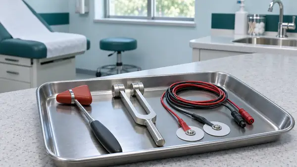
נימול בידיים וברגליים: מה הגוף מנסה לומר לכם
נימול בידיים וברגליים יכול לנבוע מלחץ על עצב, מחסר תזונתי או מבעיה נוירולוגית. כך תדעו מתי לעקוב, מתי להיבדק ואילו בדיקות בונות תמונה מלאה. בצורה נכונה.
-
רפואה שיקומית

חוות דעת רפואית: מתי צריך אותה ואיך נערכים נכון
חוות דעת רפואית יכולה להשפיע על תביעה, על ביטוח ועל הליך שיקומי. כך מתכוננים נכון, אילו מסמכים להביא ומה מבדיל בין מסמך חזק לבין סיכום חלקי. בצורה נכונה.
-
הפרעות שינה

טיפול בנחירות: אילו שיטות באמת עובדות
טיפול בנחירות מתחיל בזיהוי הסיבה האמיתית, לא בגאדג'ט אקראי. כך מבדילים בין פתרונות יעילים, סימני אזהרה והשלב שבו כדאי לבצע בדיקת שינה. בצורה נכונה.
-
הפרעות שינה

פתרון לנחירות: 8 צעדים מעשיים שכדאי לנסות כבר הלילה
פתרון לנחירות לא חייב להתחיל במכשיר מורכב. הכירו צעדים פשוטים לשינה צדית, להקלה על גודש, לשיפור סביבת הלילה ולזיהוי מצבים שבהם צריך בירור מקצועי. בזמן.
-
הפרעות שינה
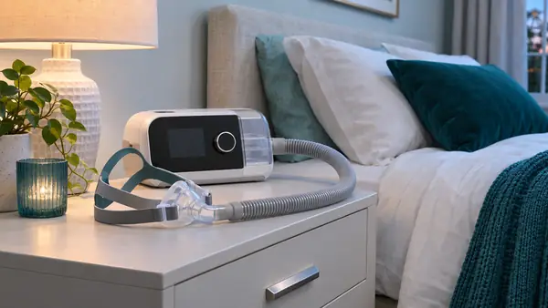
טיפול בדום נשימה בשינה: המדריך המעשי לטיפולים היעילים
טיפול בדום נשימה בשינה חייב להתבסס על חומרת הבעיה ועל מבנה דרכי האוויר. כך בוחרים בין CPAP, שינויי שגרה, אביזרים מותאמים ומעקב נכון. לפני שמחליטים.
-
רפואה שיקומית

חולשת שרירים: 10 גורמים נפוצים ואיך מזהים את הכיוון הנכון
חולשת שרירים יכולה לנבוע מעומס, מחסר תזונתי, מבעיה עצבית או ממצב מערכתי. כך מבדילים בין עייפות חולפת לבין סימן שמצריך בדיקה מסודרת. לפני בחירת כיוון.
-
מרפאת כאב
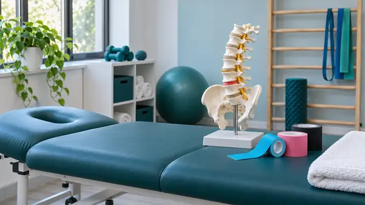
טיפול בכאבי גב: 7 דרכים יעילות להקלה אמיתית
טיפול בכאבי גב לא מתחיל רק בכדור או במנוחה. כך בונים הקלה דרך תנועה נכונה, פיזיותרפיה, שינוי עומסים, זיהוי דגלים אדומים ובחירת בירור מדויק. בצורה נכונה.
-
מרפאת כאב
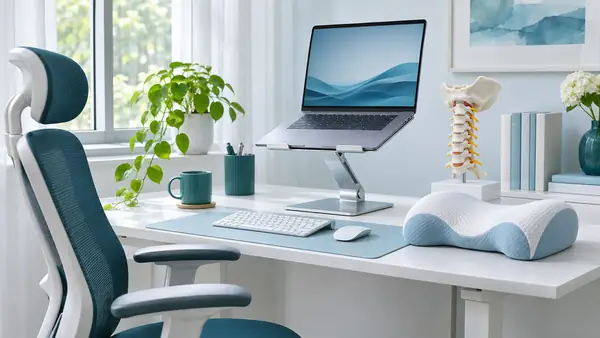
טיפול בכאבי צוואר: מדריך למה שבאמת עובד ביום יום
טיפול בכאבי צוואר תלוי בגורם: עומס, ישיבה, הקרנה עצבית או מתח שרירי. כך מחזירים תנועה, מזהים דגלים אדומים ובוחרים מסלול שיקום מדויק יותר. בצורה נכונה.
-
מרפאת כאב
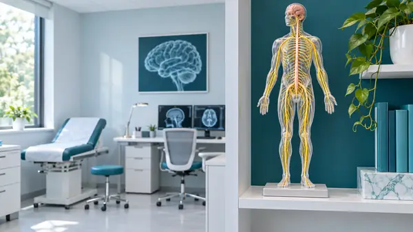
טיפול בכאב עצבי: גורמים, פתרונות ומה כדאי לבדוק
טיפול בכאב עצבי דורש להבין אם המקור הוא לחץ על עצב, נוירופתיה או פגיעה אחרת. כך מזהים כאב שורף, בוחרים בירור נכון ומתאימים מסלול הקלה. בצורה נכונה.
-
שיקום מיני ואורולוגי
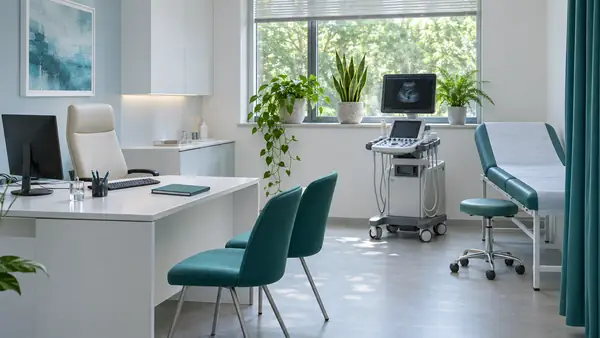
טיפול בערמונית מוגדלת: האפשרויות המתקדמות שכל גבר צריך להכיר
טיפול בערמונית מוגדלת נבחר לפי חומרת התסמינים, איכות השינה וזרימת השתן. כך משווים בין מעקב, טיפול תרופתי, הליכים מתקדמים והצורך בבירור מסודר. בזמן.
-
שיקום מיני ואורולוגי
טיפול ביובש בנרתיק: פתרונות רפואיים וטבעיים שכדאי להכיר
טיפול ביובש בנרתיק צריך להתאים לגיל, לגורם ההורמונלי ולחומרת הסימפטומים. כך משווים בין לחות מקומית, טיפול רפואי, שינויי שגרה ובירור כשצריך. בצורה נכונה.
-
שיקום מיני ואורולוגי
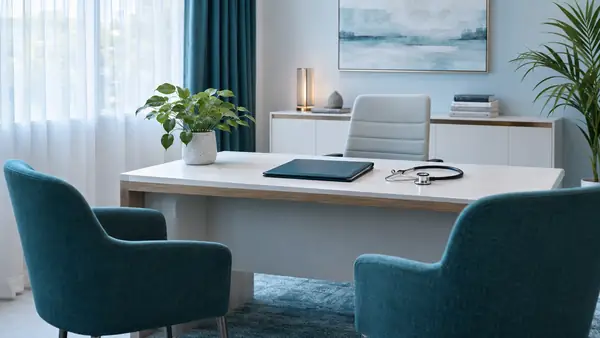
טיפול באין אונות: מהם הפתרונות היעילים ביותר
טיפול באין אונות מתחיל בזיהוי הסיבה: כלי דם, הורמונים, לחץ, תרופות או שינה לקויה. כך בונים בירור דיסקרטי ובוחרים פתרון שמתאים לאדם עצמו. בצורה נכונה.
-
רפואה שיקומית

טיפול פיזיותרפיה בסופיה מדיקל
טיפול פיזיותרפיה בסופיה מדיקל מתחיל באבחון תפקודי, ממשיך בתכנית תרגול מותאמת, ומכוון לחזרה בטוחה להליכה, עבודה, שינה ושגרה פעילה לאורך זמן בבית ובחוץ.
-
שיקום מיני ואורולוגי
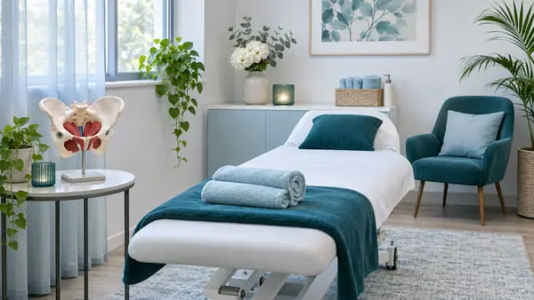
שיקום מיני
שיקום מיני בסופיה מדיקל מסייע אחרי לידה, ניתוח, כאב אגני או ירידה בתפקוד, עם אבחון דיסקרטי, תרגול מותאם וחזרה בטוחה לאינטימיות, לביטחון בגוף ולשגרה.
-
מרפאת כאב
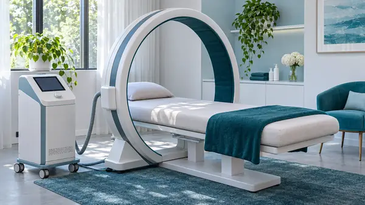
PEMF טיפול כאב מתקדם
PEMF טיפול כאב מתקדם בסופיה מדיקל משתלב בתכנית שיקום מסודרת, מסייע להפחית רגישות לעומס, ותומך בחזרה בטוחה יותר לתנועה, לתרגול ולתפקוד בחיי היום יום.
-
הפרעות שינה
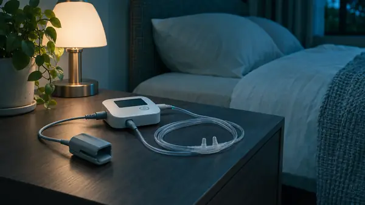
10 סימנים להפרעת שינה ומה עושים, מדריך לבדיקות שינה ביתיות ובמעבדה
מדריך מעשי לזיהוי 10 סימנים להפרעת שינה ומה עושים, כולל הסבר מפורט על בדיקות שינה בבית ובמעבדה, הכנה ותוצאות.
-
הפרעות שינה
סופיה מדיקל: מכון שינה מוביל בכפר סבא
סופיה מדיקל, מכון שינה מוביל בכפר סבא: המרכז מציע אבחון מתקדם וטיפול מותאם אישית בהפרעות שינה בילדים ובמבוגרים, לרבות נדודי שינה, נחירות, דום נשימה בשינה ועייפות כרונית. התהליך כולל הערכה רפואית מקיפה, אפשרות לבדיקות שינה ביתיות או במעבדת שינה מתקדמת, ובניית תוכנית טיפול וליווי רציף לשיפור איכות השינה והתפקוד היומיומי.
-
שיקום מיני ואורולוגי
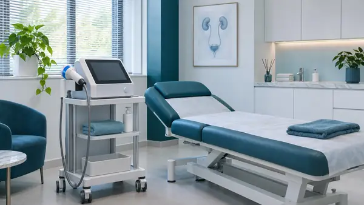
טיפול בהפרעות זקפה ושיקום מיני בכפר סבא: סופיה מדיקל, מרפאה אורולוגית מתקדמת
המאמר מציג את הגישה הרב תחומית של סופיה מדיקל בכפר סבא לאבחון ולטיפול בהפרעות זקפה ושיקום מיני לגברים. מודגש הצורך באבחון רפואי מדויק לזיהוי גורמים אפשריים כגון מצב כלי דם, גורמים נוירולוגיים, רקע הורמונלי, תרופות ומרכיבים נפשיים זוגיים, ובהתאמת תוכנית טיפול אישית. בין אפשרויות הטיפול המתוארות: ייעוץ אורולוגי מומחה, פיזיותרפיה לרצפת האגן, שיקום תפקודי, טיפול בגלי הלם, פולסים אלקטרומגנטיים (PEMF) וטיפולים בהזרקה לפי התוויה רפואית במטרה לשפר תפקוד, ביטחון עצמי ואיכות חיים.
-
מרפאת כאב
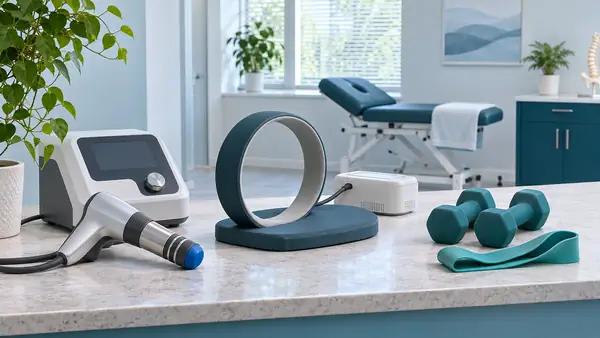
10 דרכים מקצועיות להפחתת כאב כרוני, גלי הלם, PEMF ותוכנית תנועה
מדריך מעשי ומקצועי להפחתת כאב כרוני עם דגש על אבחון, תוכנית תנועה, פיזיותרפיה, גלי הלם, PEMF, שינה וניהול סטרס.
השאירו פרטים ונחזור אליכם
קיימים הסדרים עם כללית מושלם, BWell ומגדל לייעוץ רפואי בתחום השיקום וטיפול בכאב